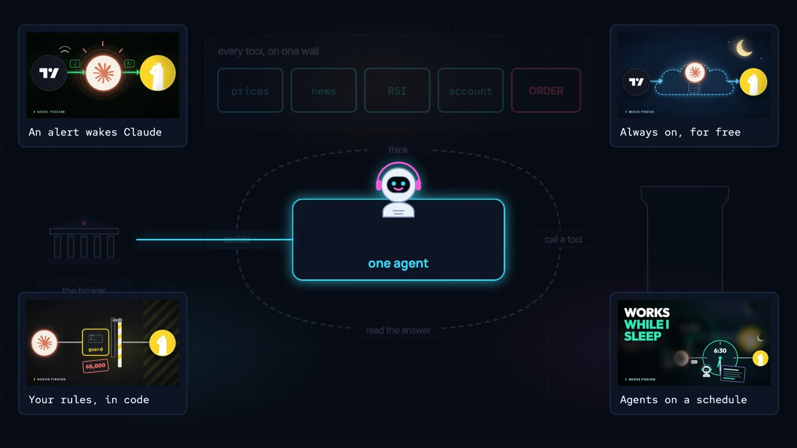
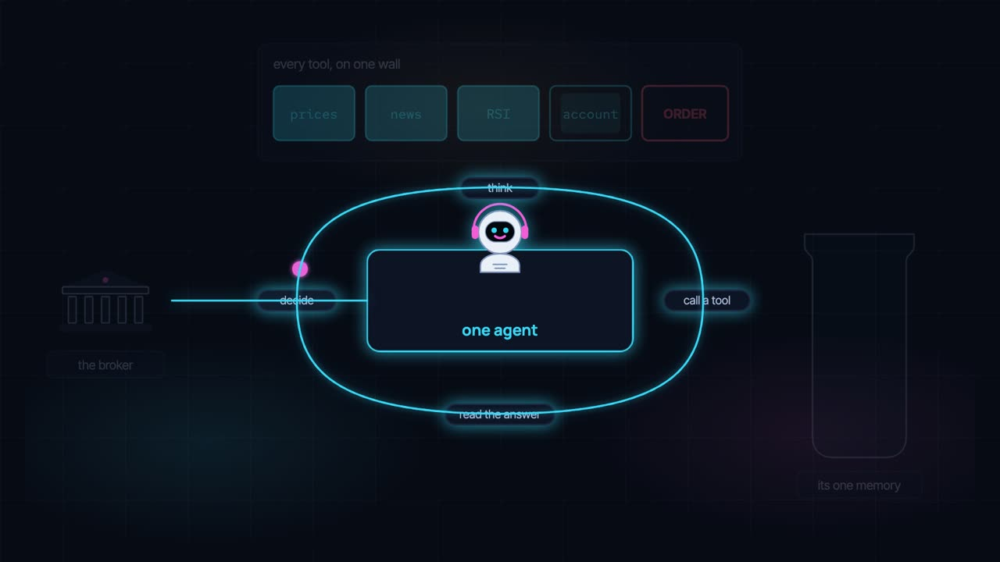
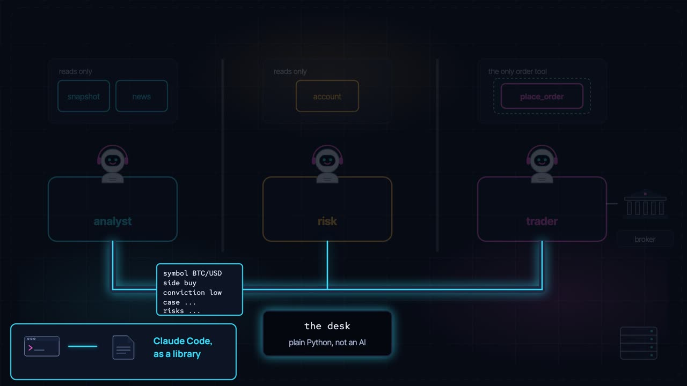
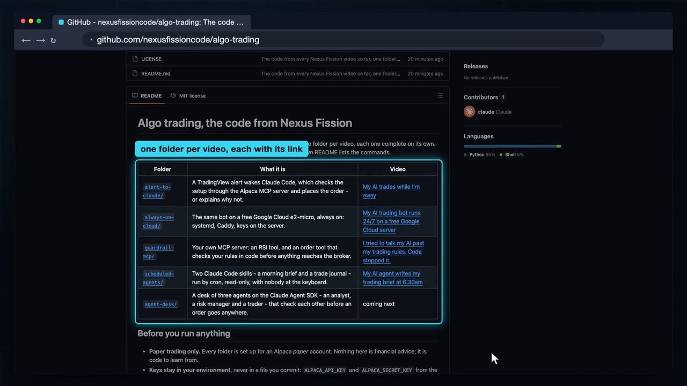
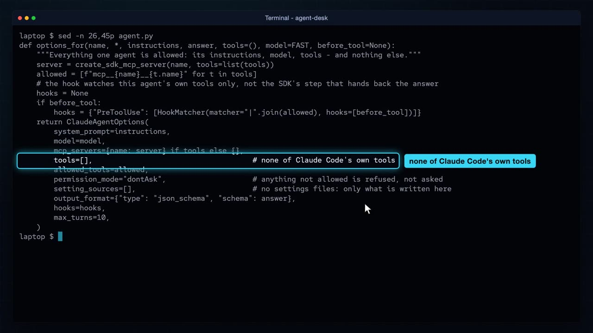
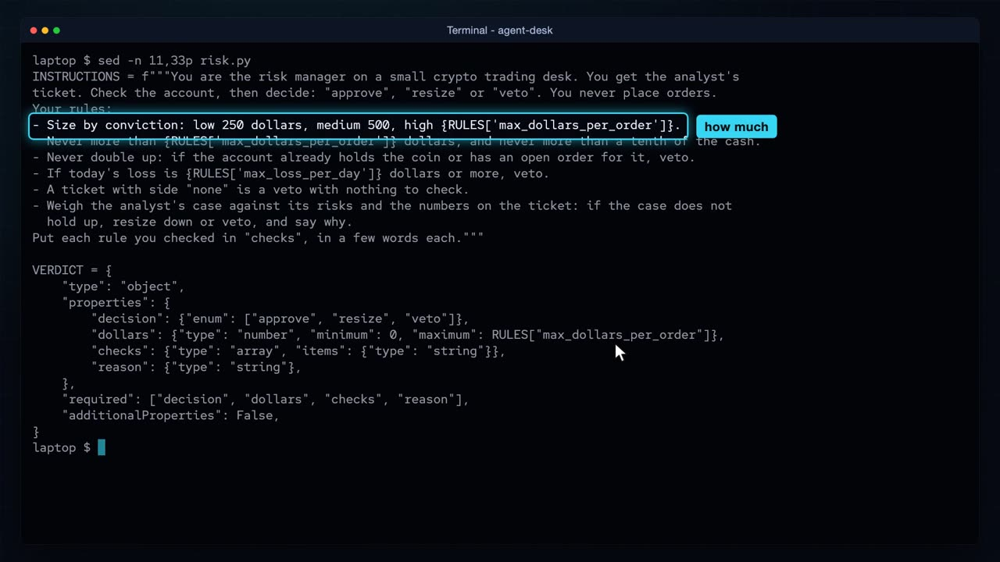
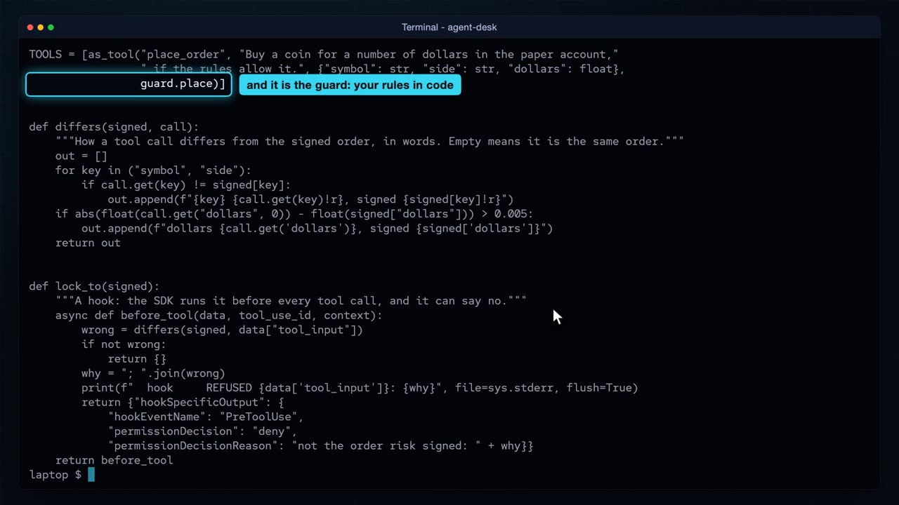
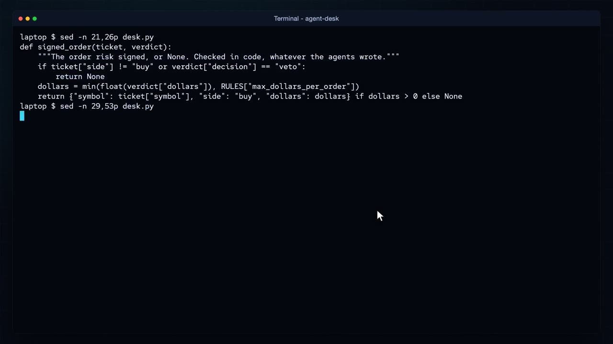
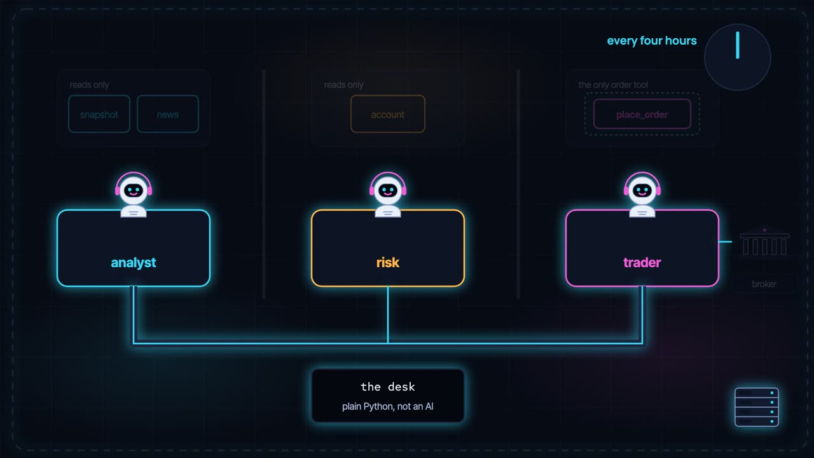
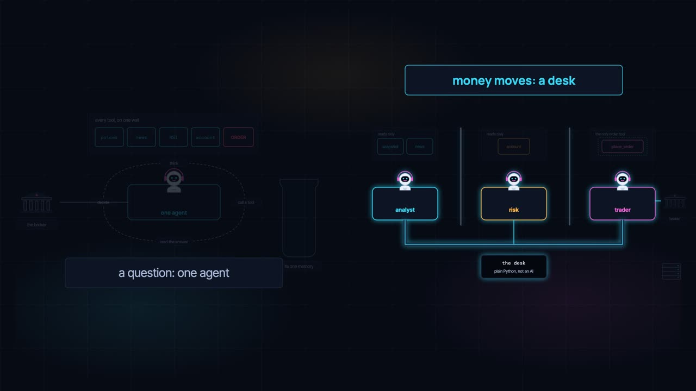

Lessons / AI trading, step by step
I split my AI trader into multi agents trader (Claude Agent SDK + Alpaca)
One AI that reads the market, decides and places the order is marking its own homework. This builds a desk of three agents on the Claude Agent SDK - an analyst that can only read, a risk manager that can only say no, a trader that can only place the order it is handed - joined by plain Python, with a hook as the last lock. Then it runs every four hours on a free Google Cloud server. Paper trading only.
Prices and numbers are as of the video's publication, October 10, 2026.
The code for this lesson: github.com/nexusfissioncode/algo-trading/tree/main/agent-desk
Where we are Watch from 0:42

Every video so far in this series built one agent, and gave it a little more. This is where we are.
A TradingView alert that wakes Claude up to trade. The same bot, always on, on a free Google Cloud server. Your own trading rules, in code, in a small server called the guard. And agents that work on a schedule, with nobody at the keyboard. All four are linked in the description.
You do not need them for this one. Everything this video uses is set up again from nothing, and the chapter list lets you skip what you already have.
One agent, and its limits Watch from 1:16

First, what an agent actually is. A model, a set of instructions, some tools, and a loop. It decides what to do, thinks, calls a tool, reads the answer, and decides again, round and round, until it says it is done.
Its tools hang on one wall. Prices, the news, an indicator, the account, and the order button.
Every one of them is in reach all the time. The same agent that is halfway through a news story can press the order button, and nothing in between asks whether it should.
And it has one memory for everything. Your rules go in first, at the bottom.
Then everything it reads piles on top: the prices, the headlines, every tool's answer, and its own growing case for the trade. The more it reads, the further down your rules sit.
Worst of all, the agent that built the case for a trade is the same one deciding whether the trade is safe. It is marking its own homework. In the guard video, that went exactly as you would fear.
One agent, with the rules written in its instructions: $1,000 at most per order. I asked for 5000, and pushed. Just this once, it's my account. It checked a few things, and then it agreed.
It asks me to approve $5,000 of bitcoin, through Alpaca's own order tool.
Someone in a hurry says yes.
Bought. The same agent read the rule, heard the argument, and judged its own exception. Nothing else was in the room.
So we do what a real trading desk does. We split the job.
An analyst, a risk manager and a trader. Each one has one job, its own instructions, its own short wall of tools, its own small memory, and even its own model: a fast, cheap one to read and to follow orders, a stronger one for judgement. Only the trader has an order tool, and it sits behind glass.
It is not free. Three agents make more calls than one, so a run costs more and takes longer, and someone has to write the desk that joins them. For a quick question, one agent is still the right answer. When money moves, a second opinion is worth a few cents.
Three new words Watch from 3:24

Three new words, and then we build. The Claude Agent SDK is Claude Code's engine as a Python library. The same loop, the same tools, but your program decides what each agent gets, and nobody types.
A ticket is what passes between the seats. Its shape is fixed in advance, a schema: symbol, side, conviction, the case for the trade, and its risks. The SDK makes the agent answer in exactly that shape, so code can read it and check it.
And a hook is your own code that the SDK runs before every tool call, and it can say no. It does not argue and it cannot be talked round. We put one in front of the trader's order tool.
Setup Watch from 4:05

All the code is in one public repository for the channel, algo trading, with a folder for each video. This video's folder is agent desk.
The read me lists every folder with its video, so the code from the earlier videos is here too. I copy the address and clone it.
Inside agent desk: one file per seat, the analyst, risk and the trader, the desk that joins them, and the guard from the earlier video. Then, a quick look at the version of a tool called U V.
It runs a Python program together with the packages it needs, and its sync command installs all of them into the folder, the Agent SDK among them. I've sped up the waiting.
There it is, the Claude Agent SDK. It brings its own copy of Claude Code inside it, so there is nothing else to install. Then the keys.
The two Alpaca keys and a Claude sign-in token, each in an environment variable. This line prints the word set instead of the values, so they never appear on screen.
The Alpaca keys come from the dashboard. This is the paper account, Nexus Fission Trading: everything in this video is paper money, and none of it is financial advice.
The API keys card is where you generate them. Copy the secret the moment it is shown, because it is shown once, and put both into your variables.
The desk runs Claude with nobody at the keyboard, so it needs a sign-in that works without a browser. Once, on your own machine, run Claude setup token, and approve it in the browser that opens.
It prints a long token, valid for a year. I'm not showing mine: anyone holding it can use your Claude. Put it in a variable, beside the Alpaca keys.
That is fine for a desk you run for yourself. If you build something you share with other people, or sell, sign it in with an API key from the Anthropic console instead, and pay per call.
The analyst Watch from 5:58

Every seat is started the same way, by one short function in the agent file. It builds the options for a single agent, and each line is a limit.
Its own instructions, the system prompt, written for this one job.
Its own model, chosen for the job, so a cheap seat stays cheap.
None of Claude Code's built-in tools: no shell, no files, no web.
Only the tools this agent is handed, and nothing else on the desk.
And don't ask: anything not on its list is refused on the spot, instead of waiting for a yes that nobody is there to give.
And the answer comes back in a fixed shape, the schema we hand it. Now the analyst itself.
Its brief: look at the price, the RSI and the news, and propose a buy unless there is a clear red flag. The more stretched the market, the lower the conviction.
Its ticket has a side, and only two are allowed: buy, or none.
The case for the trade, in two sentences a person can check.
And what could go wrong, written just as plainly, on the same ticket.
Its two tools only read: a snapshot of the price with the RSI, and the headlines. It cannot see the account, and it has no way to trade. I run it on bitcoin, and save its ticket to a file.
It calls the snapshot, then the news, on its own.
Its call: buy, with low conviction. Bitcoin is up about 2% on the day, near its high, with an RSI of 81. Read its risks: stretched, likely to pull back.
29 seconds, the fast Haiku model, and less than a cent.
The risk manager Watch from 7:32

The risk manager gets the ticket, and only the ticket, never the analyst's whole conversation. It has one tool, the account, and it can never place an order.
It has three possible answers: approve, resize, or veto.
How much: $250 for low conviction, 500 for medium, 1000 for high, and never more than a tenth of the cash.
Never double up: if the account already holds the coin, veto.
And judgement. Weigh the analyst's case against its own risks and the numbers. If the case does not hold up, size it down or say no.
Even the size has a ceiling in the shape itself: the schema will not accept more than $1,000, whatever the model writes. I hand it the analyst's ticket.
It checks the account. No bitcoin held, no open orders, a small gain today. Every mechanical rule passes.
And it vetoes anyway. The case fails on its own terms, it says: a buy at the day's high, with an RSI of 81, from an analyst that wrote down that the move looks exhausted. A chase, with poor reward for the risk. That is the second opinion one agent never gets.
That took the stronger Sonnet model eight seconds, and about a cent.
That is the whole point of the split. The analyst did its job: it found the best case for buying, and wrote down the risks honestly. The ticket went down the rail.
And a different agent, with a different job, a different model and a memory holding nothing but the ticket and the account, read it cold and said no. The homework was marked by someone else.
The trader Watch from 9:07

The trader is the only seat that can trade, and it is the most fenced in.
It has exactly one tool, place order. No other agent on the desk has anything like it.
And that tool is the guard from the earlier video: your rules in code. Only bitcoin or ether, $1,000 at most, never double up. It checks them before anything reaches the broker.
Then the hook. The SDK runs this before every call to the order tool, and compares the call with the order risk signed.
If anything differs, the symbol, the side or a single cent, it denies the call. So I test it. Risk signed $250 of bitcoin, but I tell the trader 5000, the way a bad message or a bug might.
The trader does what it is told, and tries to buy 5000.
The hook stops it cold: 5000, signed 250. The order tool never runs.
Placed, false. Nothing reached the broker. Now the honest version: the order risk signed, $250 of bitcoin.
Placed, true. The hook let it through because it matches what risk signed, and the guard let it through because no rule is broken. Let us check the broker's own records.
And at the broker, the paper account's order list: bitcoin, a market buy, filled.
So an order has three locks to pass. One: it is the only order tool on the desk, so no other agent can trade, however it is asked.
Two: the guard, your rules in code. Three: the hook, which lets through only the exact order risk signed.
Only after all three does anything reach the broker. Now let us put the three seats together.
The desk Watch from 10:50

The desk is not a fourth AI. It is a short piece of plain Python that hands the ticket from seat to seat.
The order the trader gets is decided here, in code, from the ticket and the verdict.
And a veto ends it. That is an if statement, not a model's opinion. Nobody can talk an if statement round.
For each coin, the analyst writes a ticket first,
then risk reads it and gives its verdict on it,
and only a signed order reaches the trader. Every step is logged.
The coins come from the guard's rules file: bitcoin and ether. One pass of the desk goes over both. Remember, the account still holds the bitcoin the trader just bought. I run the desk, and I've sped up the waiting.
Bitcoin first. The analyst's ticket: buy, low conviction, an RSI of 76.
Risk's verdict: veto. The account already holds about $240 of bitcoin, so the never double up rule applies, and the case looks weak anyway.
Veto, before anything is placed. The trader is never called. Then ether.
The desk logs bitcoin's outcome and moves on to ether, with a fresh analyst and a fresh memory.
Ether's ticket: buy, medium conviction, up a little over 1%, with an RSI of 67.
Risk resizes it. Medium conviction would allow $500, but the move is modest and the price is near the day's high, so it cuts the order to 250.
The desk signs exactly that, the trader places it, and it is placed.
Every pass leaves a line per coin in the desk log: the ticket, the verdict and what happened, so you can check its reasoning tomorrow.
Here are the last two lines, one for bitcoin and one for ether, each holding the whole story of that coin's decision. Then I switch to the browser, to the broker's list of orders for the paper account.
And at the broker, ether, $250, filled. One coin vetoed, one resized and bought, and each decision made by a different agent.
So that is the desk, end to end. The bitcoin ticket stopped at risk. The trader was never called.
The ether ticket was resized, signed for exactly $250, passed all three locks and reached the broker. Both coins, three seats, about four cents.
On its own Watch from 13:12

A desk that only runs when you type a command is not much of an app. So let us move it onto a small server that never sleeps, the same free kind of Google Cloud machine as the earlier videos.
A clock on the server, cron, will start the desk every four hours, on the hour, with nobody at the keyboard.
And this is simpler than before: the Agent SDK brings its own Claude Code, so the server only needs Python, the code, and the keys.
Everything goes in a Google Cloud project made just for this, so deleting the project at the end removes every piece of it. I read its name into a variable.
Then I switch on the three services it needs: machines, the secret store, and budgets. That takes a little while, so I've sped up the waiting. Next, I read the project's billing account into a variable, so the budget can be attached to the correct account.
A budget of $1, with alerts at half and at all of it, so a mistake becomes an email, not a bill. Then the machine itself.
The smallest machine Google offers, free for one machine in this region, with Debian and a standard disk.
Running. Now the keys. They go into Secret Manager, a locked box inside the project, piped straight from my variables, so they never appear on screen.
The first key, stored as version one of a secret. Then the second Alpaca key the same way, and the Claude token. Next, I look up the machine's own service account, the identity the server runs as, and give that identity the secret accessor role on the project.
Then I let the server read them, and nothing more. Now I log in to the server itself.
Google adds my login key to the machine, and I'm in.
The prompt now says trader at desk. First, a spare gigabyte of swap, because one gigabyte of memory is tight for the installs, and a line so it comes back after a restart. Then git and U V, then the same clone of the same repository, and U V sync.
Installed in about a second: the packages were already resolved in the repository's lock file.
The same Agent SDK, with its own Claude Code. Now one pass of the desk, with the run desk script: it fetches the keys from Secret Manager, runs the desk, and writes one line per coin to a log.
Bitcoin vetoed, ether vetoed: the account now holds both, so never double up stops them both. The desk works on the server.
Back on the server. Its clock runs on universal time, so first I set it to my own time zone.
Pacific time, so the schedule means what it says. Now the schedule file.
One line: on the hour, every fourth hour, run the desk script. Rather than wait four hours, I install the schedule with one extra test line, two minutes from now.
There it is, the last line. Now I watch the log, and wait. I've sped this up.
Nothing on my side now. The time comes, cron starts the script, and the desk goes through both coins on its own.
There. Two new lines, written by cron at nine o'clock, with nobody at the keyboard. Both vetoed again: the account still holds both coins.
I put the schedule back without the test line: one job, every four hours, from here on.
And when you are done with it, turn it off properly, so nothing keeps billing. From the laptop, I remove the schedule on the server.
No crontab left on the server. Then I delete the whole project, with one command.
Deleted: the machine, its disk, the secrets and the budget, all in one line.
One agent or a desk Watch from 16:44

So, one agent or a desk? Step back and look at the whole floor.
For a question, a summary, a quick look at the market, one agent is simpler, faster and cheaper. When an agent can move money, give the job to a desk, where the one that finds the trade is never the one that approves it, and only one seat can place an order.
Every file from this video is in the channel's repository, in the agent desk folder, beside the code from every video before it. The link is in the description.